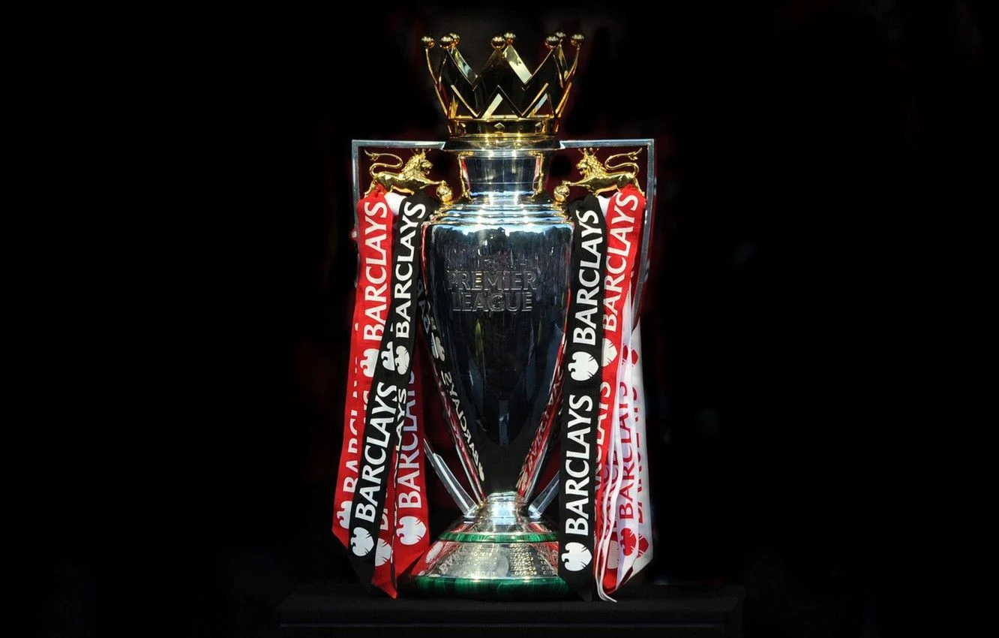

SomosPremier
La Premier League, también conocida en Inglaterra como The Premiership, es la máxima categoría del sistema de ligas de fútbol de Inglaterra. Comenzó a disputarse en la temporada 1992-93. En ella pueden también participar, por motivos históricos, aquellos clubes galeses que lo deseen, siempre que hayan competido ininterrumpidamente en el sistema de fútbol federado inglés desde, al menos, el 30 de junio de 1992. Este es el caso del Swansea City y del Cardiff City, clubes radicados en Gales participantes de la liga y que han llegado a representar a Inglaterra en competiciones europeas. Establecida la Primera División de Inglaterra denominada como The Football League en 1888 bajo amparo de The Football Association, se convirtió en la «primera liga de fútbol en el mundo». Se fusionó en 1892 con la Football Alliance para conformar el primer sistema de divisiones, y pasándose a denominar la principal categoría como Football League First Division. Dicho sistema fue ampliándose hasta que se produjo una escisión en la competición pasando a ser la Football League —que actualmente conforma tres divisiones— Premier League su principal exponente, mientras que la hasta el momento Primera División conjunta de Inglaterra y Gales de la Football League pasó a ser la segunda en importancia. El actual formato fue establecido tras un acuerdo el 20 de febrero de 1992 entre los clubes de la First Division por el que decidían separarse de la Football League para tomar ventaja de un lucrativo contrato de derechos de televisión impulsado por ellos mismos. Es por tanto una competición de carácter privado o sociedad en la que los veinte clubes miembros actúan como accionistas a través de una persona delegada por cada representante, quienes rigen dicho comité junto con Dave Richards, director del mismo, y Richard Scudamore, su director ejecutivo. La Premier League es considerada una de las cinco grandes ligas europeas junto con la Primera División española, la Serie A italiana, la Bundesliga alemana y la Ligue 1 francesa,1 ocupando el primer puesto del coeficiente UEFA.n. 12 Según la Federación Internacional de Historia y Estadística de Fútbol (IFFHS), es la «liga más relevante del mundo». El torneo fue considerado por la IFFHS de la FIFA como la liga más fuerte de la primera década del siglo xxi en Europa, superando a la Primera División de España y la Serie A de Italia que ocupaban el segundo y tercer lugar respectivamente.3 Desde su segunda edición y hasta la temporada 2015-16 el nombre del patrocinador principal se reflejaba en su denominación oficial, siendo el último desde 2004 cuando se conocía como Barclays Premier League, circunstancia que dejó de ser así a partir de la temporada 2016-17, cuando desapareció cualquier alusión a los patrocinadores con el propósito de mantener una imagen comercial limpia. Desde entonces se conoce simplemente como Premier League. A lo largo de su historia siete clubes han resultado campeones, siendo el Manchester United el equipo más laureado con trece campeonatos.4 Chelsea, Arsenal, Manchester City, Blackburn Rovers, Leicester City y Liverpool completan el resto de títulos de las veintinueve temporadas del campeonato. Después de la temporada 2003-04, el Arsenal adquirió el apodo de "The Invincibles", ya que se convirtieron, y aún permanecen, en el único club en completar una campaña de la Premier League sin perder un solo partido. El mayor número de puntos en una edición, con cien, fue logrado en la temporada 2017-18 por el Manchester City F.C., logrando también el récord de goles en una edición con 106 en la misma temporada. En 2020 tras la temporada Premier League 2019-20 el Liverpool FC, se coronaría campeón de la Premier League, logrando tras casi 30 años de sequía, su trofeo número 19 y el primero desde que la liga inglesa se cambió de nombre a Premier League.